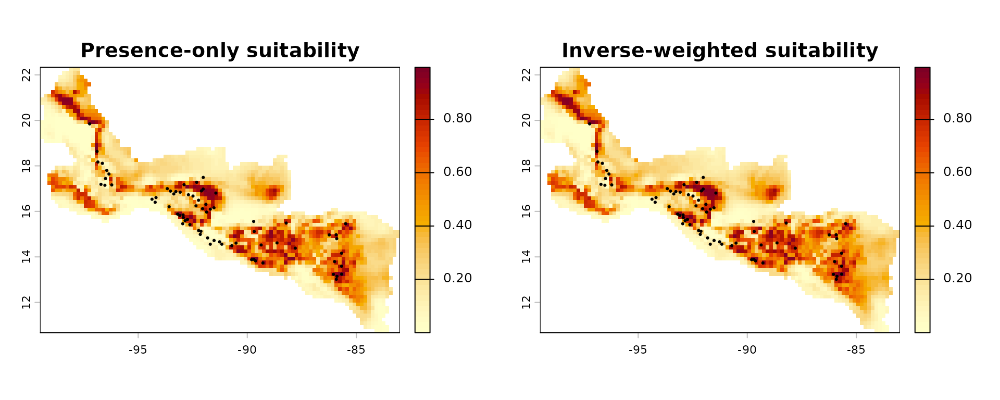
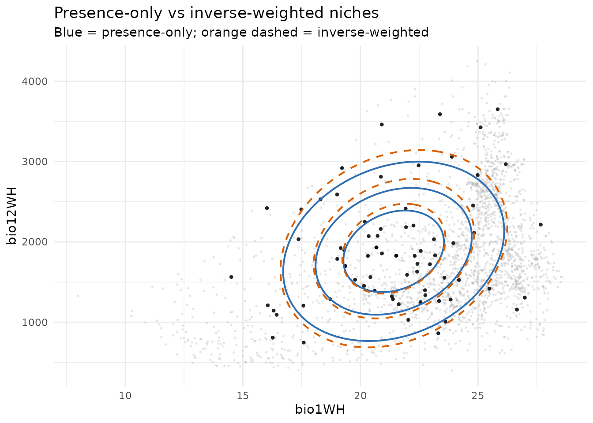

Package Workflow: End-to-End Niche Fitting and Projection
Source:vignettes/nicher-workflow.Rmd
nicher-workflow.RmdOverview
This vignette walks through the complete nicher
workflow: loading environmental data, fitting niche models, comparing
them with information criteria, projecting habitat suitability onto
geographic space, and extracting the estimated ellipsoid parameters.
1 Load data
The package ships with cropped rasters and occurrence records for the Emerald-bellied Hummingbird (Abeillia abeillei).
2 Extract environmental values
Occurrence records are longitude/latitude coordinates. We extract
raster values at those points (env_occ) and use every
non-NA cell as the accessible background
(env_m).
occ_points <- terra::vect(example_occ_df, geom = c("lon", "lat"),
crs = "EPSG:4326")
env_occ <- terra::extract(env_rasters, occ_points, ID = FALSE)
env_occ <- stats::na.omit(as.data.frame(env_occ))
env_m <- stats::na.omit(as.data.frame(terra::values(env_rasters)))
str(env_occ)
#> 'data.frame': 73 obs. of 2 variables:
#> $ bio1WH : num 20.7 22.4 22.3 19.3 23.9 ...
#> $ bio12WH: num 2075 1630 2203 1897 3060 ...
str(env_m)
#> 'data.frame': 2371 obs. of 2 variables:
#> $ bio1WH : num 24.5 24.2 24.3 25.2 24.9 ...
#> $ bio12WH: num 934 971 1013 826 925 ...
#> - attr(*, "na.action")= 'omit' Named int [1:4559] 1 2 3 4 5 6 7 8 12 13 ...
#> ..- attr(*, "names")= chr [1:4559] "1" "2" "3" "4" ...3 Fit niche models
optimize_niche() is the main entry point. We fit a
presence-only model and an inverse-weighted model that corrects for
sampling bias in the accessible environment.
set.seed(42)
fit_po <- optimize_niche(
env_occ = env_occ,
env_m = NULL,
likelihood = "presence_only",
num_starts = 3L,
seed = 42L,
control = list(maxeval = 1000L),
verbose = FALSE
)
fit_ipw <- optimize_niche(
env_occ = env_occ,
env_m = env_m,
likelihood = "ip_weighted",
num_starts = 3L,
seed = 42L,
control = list(maxeval = 150L),
verbose = FALSE,
grad = "analytic"
)
#> Warning in create_niche_obj_ptr(env_occ = env_occ_mat, env_m = env_m_mat, :
#> grad = 'analytic' is not yet implemented for likelihood = 'presence_only';
#> falling back to grad = 'central'.
#> Warning in create_niche_obj_ptr(env_occ = env_occ_mat, env_m = env_m_mat, :
#> grad = 'analytic' is not yet implemented for likelihood = 'presence_only';
#> falling back to grad = 'central'.
#> Warning in create_niche_obj_ptr(env_occ = env_occ_mat, env_m = env_m_mat, :
#> grad = 'analytic' is not yet implemented for likelihood = 'presence_only';
#> falling back to grad = 'central'.
fit_po
fit_ipw
#> -- nicher optimization result --
#> Likelihood : presence_only
#> Starts : 3 (converged: 3 )
#> Best loglik: -621.8936
#> Convergence: 1
#> eta : 1
#> Variables : bio1WH, bio12WH
#> -- nicher optimization result --
#> Likelihood : ip_weighted
#> Starts : 4 (converged: 4 )
#> Best loglik: -524.229
#> Convergence: 1
#> eta : 1
#> Variables : bio1WH, bio12WH4 Convergence diagnostics
The assess() generic checks whether multiple starts
converged to the same optimum. A "converged" flag means all
starts agree within tolerance.
5 Model comparison
compare_nicher() tabulates log-likelihood, AIC, BIC, and
Akaike weights across competing fits.
cmp <- compare_nicher(
presence_only = fit_po,
ip_weighted = fit_ipw
)
print(cmp[, c("model", "likelihood", "AIC", "dAIC", "BIC", "dBIC")])
#> model likelihood AIC dAIC BIC dBIC
#> 1 ip_weighted ip_weighted 1058.458 0.0000 1069.91 0.0000
#> 2 presence_only presence_only 1253.787 195.3292 1265.24 195.32926 Extract ellipsoid parameters
get_ellipsoid_pars() computes the sample mean and
covariance from the occurrence data — a useful baseline for the niche
ellipsoid:
pars_sample <- get_ellipsoid_pars(env_occ)
pars_sample$mu
#> bio1WH bio12WH
#> 21.41451 1882.60274
pars_sample$s_mat
#> bio1WH bio12WH
#> bio1WH 8.073574 433.5456
#> bio12WH 433.545626 455709.4650The fitted models refine these estimates via maximum likelihood. The
optimized parameter vector is stored in fit$best$theta and
used internally by predict() when projecting suitability
onto rasters.
7 Project habitat suitability
The predict() method projects the fitted niche onto
environmental rasters, producing a geographic suitability map with
values in
.
Side-by-side comparison
op <- par(mfrow = c(1, 2), mar = c(3, 3, 3, 5))
plot(suit_po,
main = "Presence-only suitability",
col = hcl.colors(50, "YlOrRd", rev = TRUE))
points(example_occ_df$lon, example_occ_df$lat, pch = 20, cex = 0.45)
plot(suit_ipw,
main = "Inverse-weighted suitability",
col = hcl.colors(50, "YlOrRd", rev = TRUE))
points(example_occ_df$lon, example_occ_df$lat, pch = 20, cex = 0.45)
par(op)The inverse-weighted model typically produces a tighter niche estimate because it down-weights regions of environmental space that are over-represented in the background.
8 Iso-suitability contours in environmental space
library(ggplot2)
ggplot() +
geom_nicher_background(env_m, size = 0.35, alpha = 0.18) +
geom_nicher_occ(env_occ, size = 1.2, alpha = 0.85) +
geom_nicher_isosuitability(
fit_po,
level = c(0.75, 0.5, 0.25),
colour = "#2f6fb2",
linewidth = 0.7
) +
geom_nicher_isosuitability(
fit_ipw,
level = c(0.75, 0.5, 0.25),
colour = "#d95f02",
linetype = "dashed",
linewidth = 0.7
) +
labs(
title = "Presence-only vs inverse-weighted niches",
subtitle = "Blue = presence-only; orange dashed = inverse-weighted",
x = names(env_occ)[1],
y = names(env_occ)[2]
) +
theme_minimal()
References
Jimenez, L., Soberon, J., Christen, J. A., & Soto, D. (2022). Dealing with critical uncertainty in ecological niche models. Ecological Modelling, 468, 109823. https://doi.org/10.1016/j.ecolmodel.2021.109823
Jimenez, L. & Soberon, J. (2022). Weighted likelihood estimation of the fundamental niche. Ecological Modelling, 470, 110009. https://doi.org/10.1016/j.ecolmodel.2022.110009